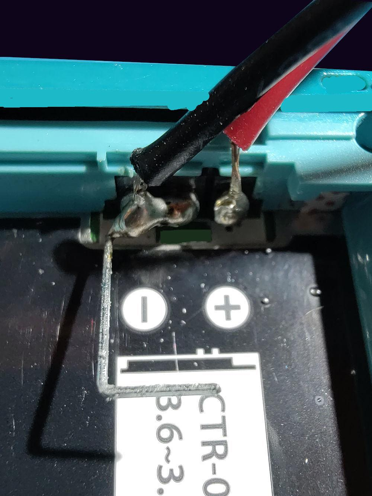
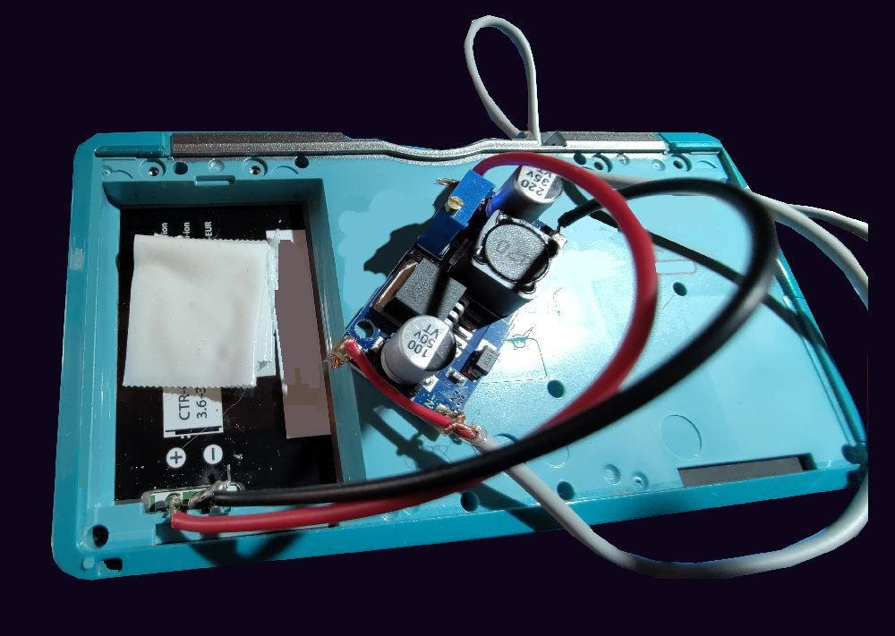
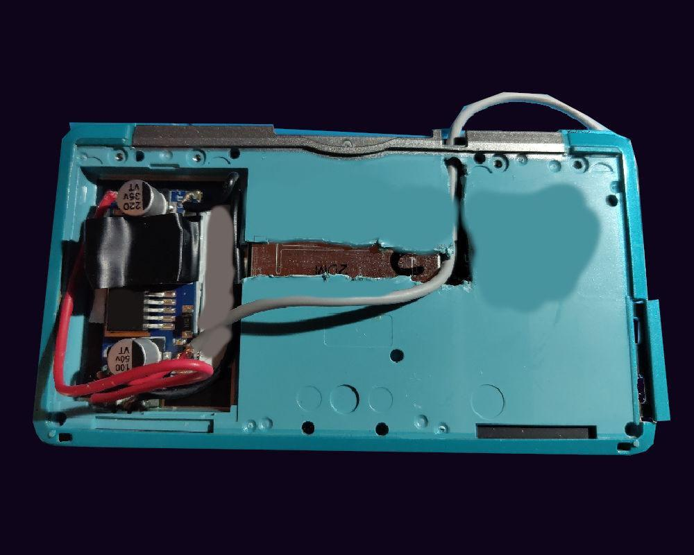
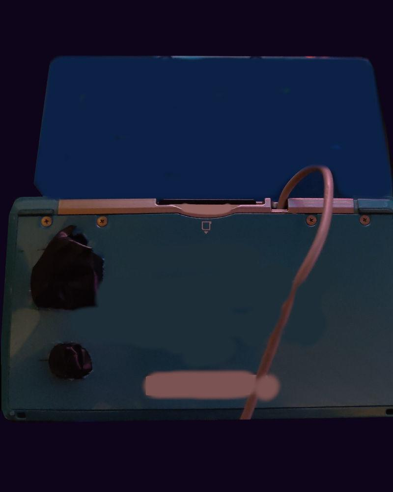
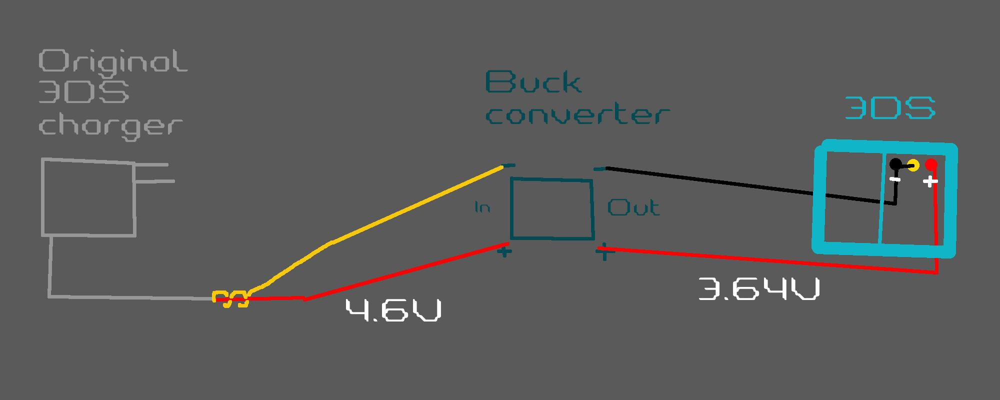
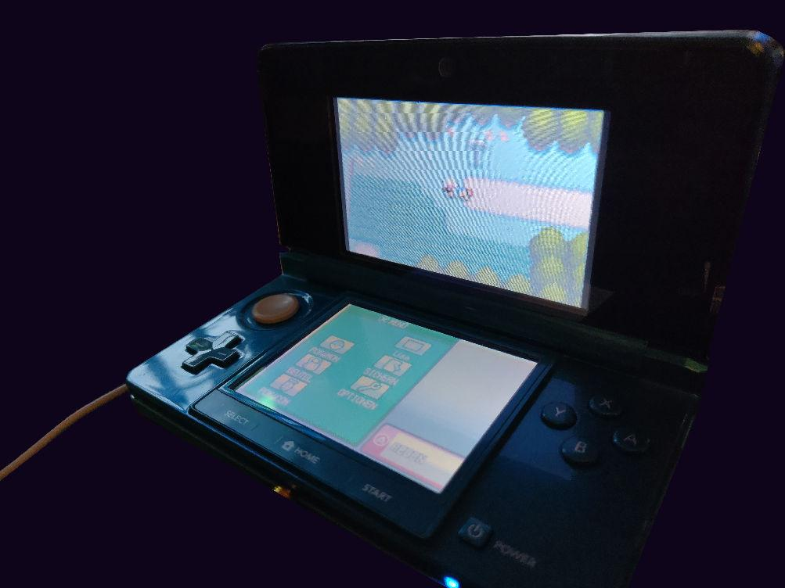

My husband and I needed decorations for our new surround sound setup. We added a shelf to our living room and that now needs decorations and, as young adults nowadays are, we don't own and/or want generic seasonal bulls*it decorations. So we got random gaming crap from our childhood's from the basement and put it in there. While doing this I discovered literally all battery's of any handheld console was bloated.
After removing them all I thought to myself, playing Pokémon Soul Silver with the Pokéwalker would be nice again. This is also the ONLY reason for me not to just use my backup and play on anything else.
But without a battery this is gonna be not possible. The 3DS CAN run without a battery BUT needs it to power on, then you can just remove it while plugged in. I can see why they block the use without it but at the same time it sucks for preservation or later in the hardware's lifetime... but that was never the goal of the manufacturer (if anything they are the inverse of preservation).
After searching a lot I saw no one did a hard power wire mod before. Some adapters for generic battery's exist but not a direct power mod.
I found one website that said it has the information about the charger but it was locked to admins (WTF). So I removed the cable isolation and found the exposed wire around the red middle wire is negative and the wire inside the red isolation is positive. Measuring the voltage, it outputs 4.63V exactly.
And after seeing that good battery's get up to 30 euros per battery with everything incl. and official once are out of the question, because I like to be able to do class action lawsuits and despise forced arbitration I decided to hard-mod the power-cable into the 3DS (Last time I wrote I will enforce my principles no mater what I meant it. Even if that means permanently removing the portability of a device.). I just striped the wires of an official charger, connected a buck converter to it to get from 4.6 to 3.6/7 volts and then soldered the output directly to the 3DS battery contacts. To convince the 3DS that a battery is inserted the middle pin must be bridged to the minus pin. I used a small metal wire for that (I know my soldering is absolutely terrible).
For strain relieve I just used wire routing, taped it down and then after making sure the cables don't get pinched by the back-cover pressed it down with the back-cover (I know, this is jank AF).
It works great. I obviously configured the buck converter before connecting it to the 3DS. I had 3.64V and the 3DS thinks it is around 75% full. Should you do this? No! This can be a fire hazard, I can never leave the DS alone plugged-in and I always must make sure I unplug it and the try turning it on to discharge the capacitors in the charger. You also must ensure to NEVER and I mean N E V E R connect a charger to any of the two charging ports of the 3DS. This will 100% kill it. I only did this because of the Pokéwalker, the overpriced high quality battery's and official once being out of the question. I will most likely never use the 3DS again after playing Soul Silver.
One other thing I tested with a "New 3DS XL" was, if it would be enough to short minus to the middle pin on the battery terminals of the DS but sadly no. The New 3DS XL will not turn on.
On other thing I want to write about is patching DS mode. My 3DS has TN displays and they suck. I hate TN panels with a passion, my other "New 3DS XL" has a top IPS panel but it has vinegar syndrome aka. LCD-Bleeding aka. the screen is delaminating (And yes I removed the lens and tried the pressure method and not it did not work). It has not gotten any worse over the past 3 years so I hope it stays in the corners. It seems to be a common issue on the IPS models. A good thing is 3DS modding is so far that you can path DS mode in a way so it has color filters and Redshift (which can be used to adjust colors and Temperatures!). A post on Reddit shows very nice settings for the LUMA (3DS CFW) but you can apply these settings using a DS-Mode patcher named "TW-Patcher". They used Temp: 7500K, R 0.72, G 0.70, B 0.72 (I also use this on my IPS-Model but with 0.82, 0,80, 0.82), Brightness 1.0. It really looks far better if a little dark, but everything is better then washed out TN. It can also be used to play ultra-wide DS games with cheats (Needs widescreen patch and GPU-Scaling. Fully unlock DPAD because why not.). I created one for widescreen gaming in the TWiLight Menu++ (Can boot card games in the DSi menu) and for normal DS games I used Redshift + DPAD-Patch + the "Linear Sharpening 1" filter. Don't close the DS, it will lose the patched colors. Something something RAM limitations.
https://www.reddit.com/r/3DS/comments/vd86qn/comment/icju0kn/
Connecting to the battery contacts:
How it is setup:
Literally carving out the plastic for a cable channel (A removal of the backside of the housing is a must because the 3DS is dense and has a lot of stuff directly under the plastics. Cutting while it is on the 3DS is NOT an option. Be careful with the ribbon connectors on the other side):
The finished project. And yes the capacitors and the settings wheel box of the buck converter is sticking out. I covered it with tape to make sure to never touch it or accidentally change the voltage (A slight change can be high enough to kill the 3DS):
And a drawing of how it works (I know, the nearly 3 years of drawing technical infrastructure of buildings in school really payed of):
I also saw that a lot in regards to modding has changed. You can even play in widescreen (Looks better) or use Hardware filters (TWPatch with Linear1 looks bad but still better then default).

Small little Updated: I did the exact same mod (this time 3.69~72V) also too my "New 3DS XL" with a IPS-Panel as the top screen.
I must document this somewhere:
I ruined the solderpads of one of the buck converter's by soldering the wrong wire and not being able to remove it after that. Sooo I took an other one and FORGOT to regulate it down to the right voltage! I accidentally have put 4.37 Volts into the New 3DS XL... . It worked fine for a week but then I noticed artifacts of the boot screen on the main menu. Then my brain realized the mistake and I regulated it down to 3.7 volts (I can also confirm that the power-led changes instantly if the voltage gets to low, the system battery display updates around every 10 seconds or so (did not check this any farther because I wanted to remove my mistake and not play around with the battery meter.)). It still works fine since that and the artifact's never came back. Learn from my mistake (and take the knowledge with yourself that the New 3DS XL can handle 4.3 volts for a good amount of time... . DON'T DO THIS!) I AM SO GLAD IT IS NOT DEAD!
Let's see how long the screen can survive in activ use with LCD-Bleed:
From my writing here and in the past, I'm very sure you all can see I don't think highly of the manufacturer. And just to make sure I cover my tracks, because what are rights anyway: Everything here is my opinion and theoretical and dose not must be true.